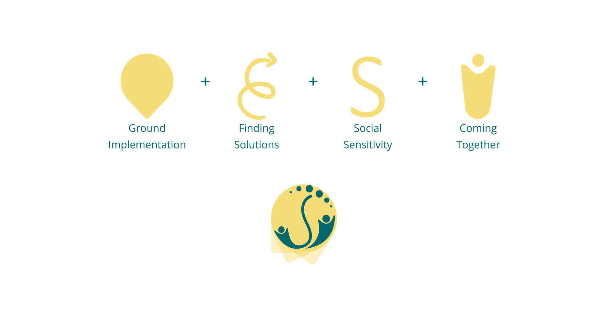
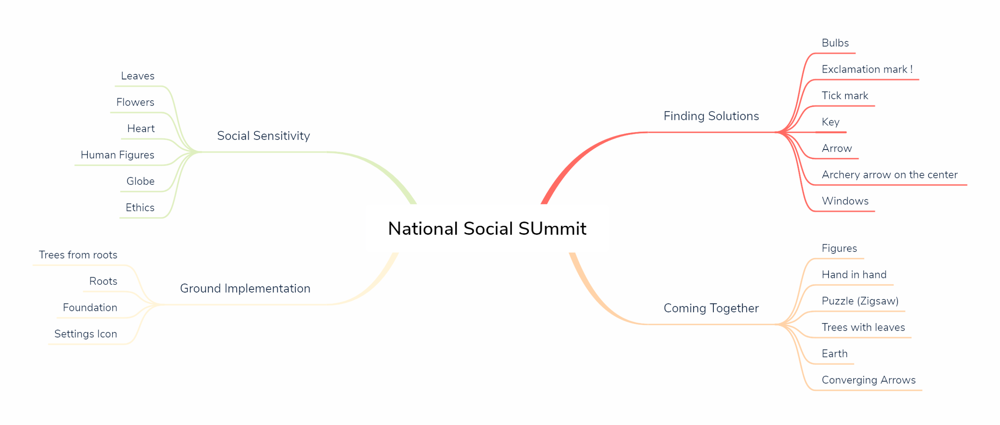
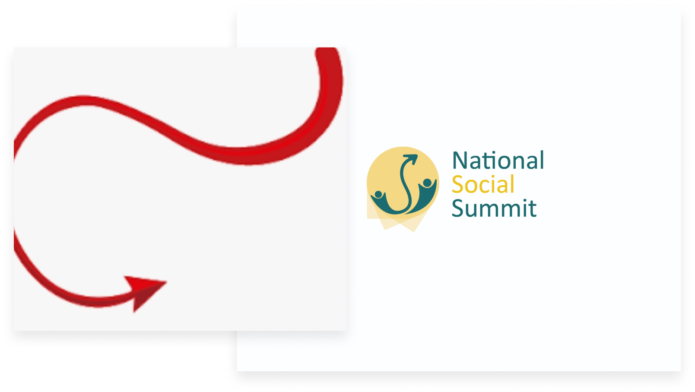
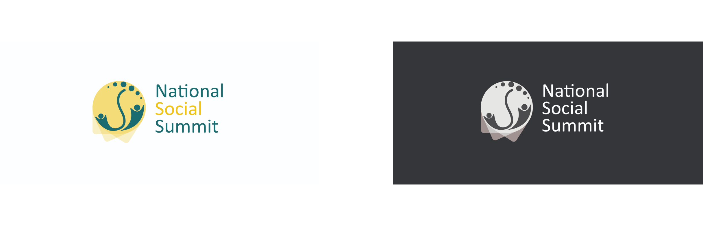

Project Overview
- Drafted a brand new logo for National Social Summit based on their core values
- Created a brand value for National Social Summit that alignes with their notion
About National Social Summit
National Social Summit is a summit organised by IIT Roorkee which endeavors to provide a platform to organizations working for the benefit of society to come together and join hands, and make a greater impact on social issues, through the pursuit of credible and substantial projects.
Why redesigning a logo
The previous logo seems to be a very generic one that can be interpreted in any way possible. It wasn’t specific and not unique.
Task
The new logo should represent core values of:
- Coming Together
- Finding Solutions
- Ground Implementation
- Social Sensitivity
Concept

Values
- The logo conveys four core values of, Coming Together | Ground Implementation | Finding Solutions | Social Sensitivity
- Human figures emerging from a ground level showing ground implementation. All the figures are striving towards one unique goal or a solution which is depicted by the upward arrow vmade using circles, within which the hidden letter S represents the core value of being social.
- The arrow is represented by circles which is symbolizing multiple solutions, ways to help reform the society and make it a place worth living.
Values like coming together is shown by human figures and the leaves.
- The colors chosen i.e., shades of Green and Citron are representing the feeling of light and social values ( Citron being the color symbol of social values). Both of them are giving an essence of social reformation.
Mindmap

Rough Sketches

First Iteration
The logo was re-iterated for the reason that the arrows which were symbolizing finding solutions were conveying another meaning of devil’s tale.

Final Iteration and Mockups


My Learning
- Got to learn about what is rebranding and how it is done. The basic process, the preliminary UX Research and how to reflect a brand identity using various elements like color and typography.
- Making mindmaps and learning about what is mood board.